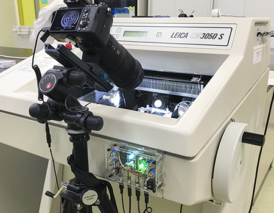

System Overview/装置の概要
CoMBI-U, Universal type, 2021.10-current

CoMBI-U with a cryostat, LEICA CM3050. A sensor detects a magnet on the handle.

CoMBI-U with a rotary microtome, YAMATO made in 1963. A sensor detects a magnet on the handle.

CoMBI-U with a sliding microtome, YAMATO REM-710. A sensor detects a magnet on moving parts. "SL" mode release shutter only when a magnet passes in one direction.
The magnetic sensor detects the handle position and the camera captures serial images of the block surface. Since it is not affected by the color or shape of the handle surface, it is suitable for almost all types of microtomes; cryostat, rotary microtome, and sliding microtome. Handles in any shape, color, and dirt can be accepted.
磁気センサーがハンドル位置を検知し、カメラがブロック面の連続撮影をします。ハンドル面の色や形状に影響されないため、ほぼすべてのタイプのミクロトームに適合します。CoMBI-Uひとつで、クリオスタット、回転式ミクロトーム、滑走式ミクロトームを3D撮影装置に仕立てます。
Essential components/必須部材
- Microtome, any type（ラボ所有、共用、電動、手動、回転、滑走、なんでもよい）
- Digital camera with release interface/カメラ、リリースケーブル端子があるもの
- Macro lens, 150 to 180 mm for cryostat, 100 mm macro for other microtomes / マクロレンズ。クリオスタットには望遠マクロ（150-200mm）がより良い。通常のミクロトームには、100mmマクロがよい。
- Tripod, rigid/丈夫な三脚
- Head/雲台
- Self-made devices/自作の電子工作物 制御装置、センサーなど
- PC for image processing/パソコン（画像処理は無料のアプリでもできます）
Options/場合に応じて
- Mount adaptor/マウントアダプタ
- Teleconverter/テレコンバーター
- Focusing rail/フォーカスレール丈夫なもの
- USB cable for tethering/USB3ケーブルで、撮影中にPCとつなげると便利
CoMBI-C (Cryostat) model, 2017-2021/クリオスタット型
The sensor detects handle position and synchronize with shutter release.
センサーでハンドル位置を検知し、カメラシャッターと同期します。
Essential components/必須部材
- Cryostat (lab's own, common facility, motor-drice, manual-drive...any condition, any type) クリオスタット（ラボ所有、共用、電動、手動、なんでもよい）
- Digital camera with release interface/カメラ、リリースケーブル端子があるもの
- Macro lens, 100 to 180 mm/マクロレンズ、望遠150-200mmまたは中望遠100mm
- Tripod, rigid/丈夫な三脚
- Head/雲台
- Self-made devices/自作の電子工作物 制御装置、センサーなど
- PC for image processing/パソコン（画像処理は無料のアプリでもできます）
Options/場合に応じて
- Mount adaptor/マウントアダプタ
- Teleconverter/テレコンバーター
- Focusing rail/フォーカスレール丈夫なもの
- USB cable for tethering/USB3ケーブルで、撮影中にPCとつなげると便利
CoMBI-S (Sliding microtome, 2021.7-current)/滑走式ミクロトーム型、電動
Components/必須部材
- Sliding microtome 滑走式ミクロトーム
- Digital camera with release interface/カメラ、リリースケーブル端子があるもの
- Macro lens, Canon 65mm 1-5x, or Laowa 100 mm 1-2x, Laowa 25 mm 2.5-5x/マクロレンズ
- Metal frame (Order-made) 金属製フレーム/丈夫なフレーム（特注、桐生電子（群馬県桐生市）にオーダーできます。）
- Handle motore (Order-made) ハンドルモータ（特注、同上）
- LED lights (self-made) LED照明
CoMBI-S (Sliding microtome, 2021.7-2021.10)/滑走式ミクロトーム型、手動
Components/必須部材
- Sliding microtome/滑走式ミクロトーム
- Digital camera with release interface/カメラ、リリースケーブル端子があるもの
- Macro lens, Canon 65mm 1-5x, or Laowa 100 mm 1-2x, Laowa 25 mm 2.5-5x/マクロレンズ
- Tripod, rigid/丈夫な三脚
- Head/雲台
- LED lights (self-made) LED照明
- Self-made devices, including Arduino, sensors and photocouplars/自作の電子工作物 センサーなどをArduino制御
CoMBI, old but new (2020-2021.10)/旧いけど新しい
Let's perform the modern 3D-imaging with a classic microtome made in 1963.
古いミクロトームも、最新3Dイメージング装置に。TOF距離センサを用いて、開発は済ませた（2020）。しかし、CoMBI-Universal type (2021.10)の登場により、TOF距離センサモデルは不要になった。2022.5 液晶がダメ、長持ちしないかあ。
History/開発の歴史
CoMBI-U (Universal type)/すべてのミクロトームに適合する新型CoMBI
-
2021.10 : CoMBI-Universal type had been developed, to replace CoMBI-S and CoMBI-C types. CoMBI-U type can be installed to almost any types of microtomes.
-
2021.10: CoMBI-C型、CoMBI-S型を統合すべく、CoMBI-Universal型を開発した。ほぼすべてのタイプのミクロトームに適合する。
CoMBI-C (cryostat) model/クリオスタット型
- 2014: 1st gen., Development was started. Fully-manual operated. Data adopted for a figure in Dev Dynam 2018.
- 2014: 2nd gen., I made shutter control a mechanical contact, but failed completely due to chattering.
- 2014: 3rd gen., Introduction of Arduino. Shutter was controlled by a sensor and microcontroller.
- 2017: 4th gen., Published in Sci Rep 2017. With the spirit of open-science, we made all information available to the public.
- 2017: 5th gen., Printed circuit board was made by P-board-com.
- 2019: Improved, Compatible with various cameras.
- 2020: Improved, Two-step adjustment of LED lighting; strong at 12V and weak at 9V.
- 2020: Developed a sensor checker, which allows each user to check and adjust the sensor condition.
- 2021.10 : 6th generation, CoMBI-C type has been replaced by the CoMBI-Universal type. Sensor, shutter release mechanism and brushes were renewed.

- 2014: 第1世代、開発開始、すべて手動で操作し、データは論文の図に採用した
- 2014: 第2世代、シャッター制御を機械的接触にしたが、チャタリングのため完全に失敗した
- 2014: 第3世代、Arduinoを導入し、シャッターをセンサーとマイコンで制御した
- 2017: 第4世代、論文発表。オープンソースの精神で、あらゆる情報を公開した
- 2017: 第5世代、プリント基板をP板-comで製作した
- 2019: 改良、各社のカメラに対応させた
- 2020: 改良、LED照明の2段階調整機能を搭載した 強12Vと弱9V
- 2020: センサーチェッカーを開発、各ユーザがセンサーの調子を確認し、調整できるようになった
- 2021.10: CoMBI-C型は、CoMBI-Universal型に統合された。センサー、シャッターリリースの仕組みと、ブラシが刷新された。
CoMBI-S (sliding microtome)/滑走式ミクロトーム型
- 2014: Started development. Handle operation was manual.
- 2018: Handle operation motorized
- 2020: Paraffin blocks successfully opaque, so that CoMBI supports/analyzes paraffin embedded specimens.
- 2021: Published in an open access journal. Manual model is open source, motorized model is partially outsourced for manufacturing (metal fabrication and motor control)
-
2021.10 : CoMBI-S type has been replaced by the CoMBI-Universal type. Sensor, shutter release mechanism and brushes were renewed.
-
2014: 開発開始、ハンドル操作は手動
- 2018: ハンドル電動化
- 2020: パラフィンブロックの不透明化に成功し、パラフィンブロックに対応
- 2021: 論文発表、オープンアクセス誌。手動モデルはオープンソース、電動モデルは一部製造委託（金属加工とモータ制御）
- 2021.10: CoMBI-S型は、CoMBI-Universal型に統合された。